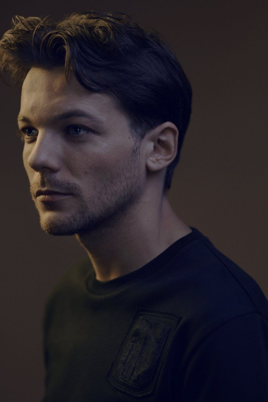
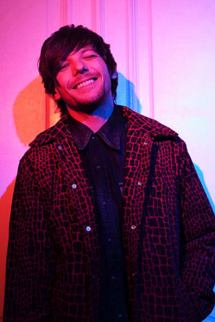
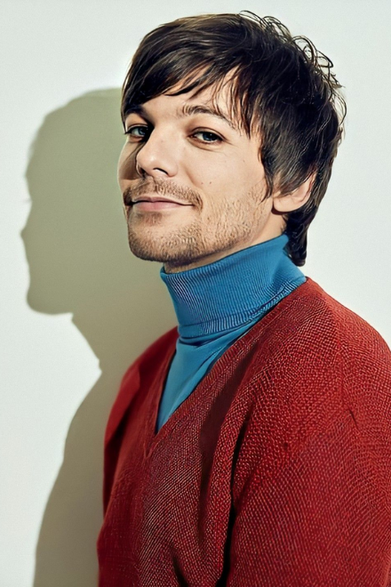
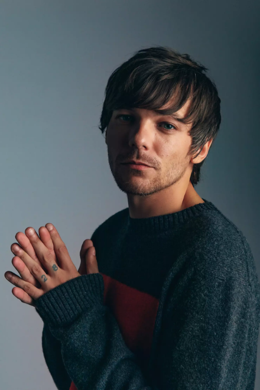

Louis Tomlinson é um cantor e compositor nascido em Doncaster, no dia 24 de dezembro de 1991, que disparou para o estrelato em 2010 depois de aparecer no show de talentos sediado no Reino Unido, The X Factor. Como membro integrante da banda One Direction, Tomlinson ganhou sucesso mundial após a banda ter ficado em terceiro lugar no show de talentos.